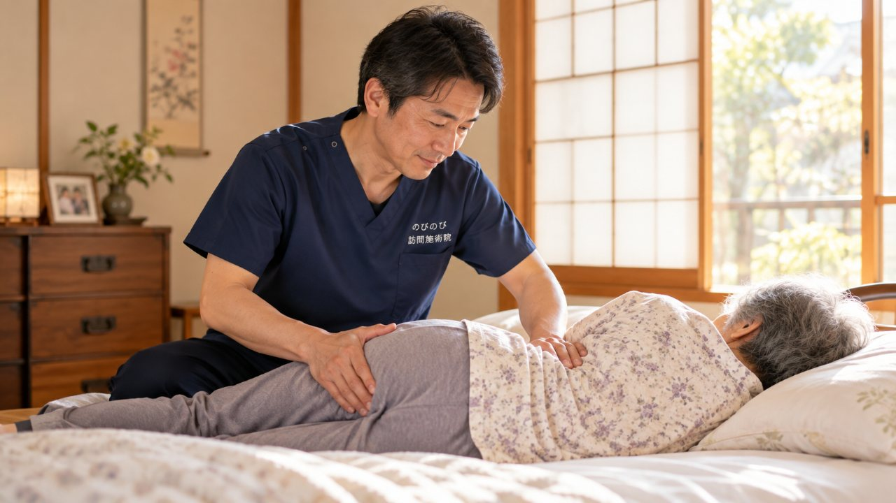

しりもちや転倒をきっかけに、あるいは気づかないうちに、背骨がつぶれるように折れてしまう。骨がもろくなった高齢の方に起こりやすいけがです。背中や腰の痛みで動けなくなり、寝て過ごすうちに体力まで落ちてしまうと、その後の暮らしは大きく変わります。のびのび訪問施術院は、通うのがむずかしい方のもとへ伺い、はり・きゅうを行う施術院です。ここでは、圧迫骨折のあとの痛みとの向き合い方、そして受診の目安をふまえて、家で施術を受けるという道をお話しします。
結論から先に。圧迫骨折は、まず医療機関での診断と管理が最優先です。強い痛みで動けない、痛みが日ごとに増す、足のしびれや麻痺、発熱といった変化があるときは、鍼灸より先に整形外科などを受診してください。鍼やお灸の出番は、主治医の許可のもと、状態が落ち着いた慢性期。残った背中や腰のこわばり・痛みを和らげ、体力の回復を支える補助です。医療保険（鍼灸で算定）を使い、1回の総額3,950円、1割負担で約395円が目安。要介護認定は不要で、介護保険の限度額とは別枠です。感じ方には個人差があります。
背骨の圧迫骨折とは、どんなけがか
背骨の圧迫骨折は、積み木のように連なった椎骨のひとつが、上下からの力に耐えきれずつぶれるように折れてしまうけがです。多くは骨粗しょう症で骨がもろくなった方に起こります。しりもちをついた、段差で軽く転んだ、そんな小さなきっかけで折れることもあれば、はっきりした転倒がないまま、いつの間にか折れていたという方も少なくありません。
特徴的なのが、動きはじめの痛みです。朝、布団から起き上がろうとした瞬間、寝返りを打った拍子に、背中や腰にズキッと差し込む。じっとしていれば楽なのに、体を動かそうとすると痛む。折れた場所によっては、時間がたつにつれて背中が丸くなり、身長が縮んだように感じる方もいます。急に強かった痛みは数週間で和らいでくることが多いのですが、こわばりや鈍い痛みが月をまたいで残ることがあり、これが暮らしのしづらさとして尾を引きます。
急に強い痛み・しびれ・発熱があるときは、施術より先に受診を
まずお伝えしたいのは、順番のことです。急に強い背中や腰の痛みが出た、足にしびれや力の入りにくさが出てきた、発熱をともなう。こうしたときは、新たな骨折や神経の圧迫が起きている可能性があります。鍼やお灸を考える前に、整形外科を受診してください。
折れた直後の急性期は、なにより安静が優先されます。痛みが日を追って強くなる、これまでなかった症状が加わる、そんなときも同じです。診断や、コルセットをどうするか、治療の方針を決めるのは整形外科の医師の役目で、私たちがそこに立ち入ることはありません。施術はあくまで、医療が主役の回復を横から支える補助の位置づけです。この線引きだけは、はじめにはっきりさせておきたいと思います。
落ち着いてきたら、鍼灸マッサージでできること
強い痛みの山を越え、医師から体を動かしてよいと言われたころから、私たちの出番です。長く痛みをかばっていると、背中や腰の筋肉はすっかり固まってしまいます。こわばった筋肉をゆるめ、血のめぐりを促して、残った痛みやだるさを軽くしていく。鍼やお灸、手技のマッサージで、そこをていねいにほぐしていきます。
やっかいなのは、こわばりが悪循環を生むことです。痛くて動かさないから固まり、固まるからいっそう動かしづらくなる。この輪をどこかで断ちたい。落ちてしまった筋力を少しずつ取り戻す機能訓練も、施術のなかで組み合わせていきます。これは施術に含まれていて、追加の料金はかかりません。もちろん、折れた骨がくっつくのを早めるといった効果をうたうものではありません。あくまで、痛みとこわばりで縮こまった体が、もう一度動きやすくなるのを手伝う。そういう関わり方です。
医師の同意にもとづく保険と、はじめの確認
費用の面から、続けやすさをお話しします。この施術は、医師の同意にもとづく医療保険（療養費）を使います。要介護認定は必要なく、かわりに医師の同意書が必要です。介護保険の限度額とは別の枠なので、デイサービスなどをすでに使っている方でも、その枠とは別に受けられます。腰痛症は保険の対象になる症状のひとつで、保険が使える症状と仕組みのなかにも含まれます。
負担の目安です。ご自宅で1名が1回の施術を受ける場合、総額は3,950円、1割の方なら1回およそ395円です。週2回で続けると、1割の方で月およそ3,160円が目安になります。訪問にあたって出張費はいただきません。伺うのは国家資格を持つ施術者です。はじめにご自宅で体の状態と医師の指示を確かめ、どこがつらいか、どう動くと痛むかをうかがってから、その方に合った進め方を組み立てます。料金のより細かい仕組みは自己負担額の解説にまとめています。
通院がこたえる背骨に、家で受けるという選択
圧迫骨折のあと、通院そのものが大きな負担になることがあります。玄関の段差、車の乗り降り、待合室の椅子。ひとつひとつが、痛む背骨にはこたえます。無理をして通ううちに痛みがぶり返し、足が遠のいてしまう。そんな話をよく聞きます。
訪問での施術なら、移動の負担そのものがありません。背中まわりのこわばりが和らいで、起き上がりが少し楽になったと話される方もいます。感じ方には個人差があります。家で受けられるから、天気や体調に振り回されず、無理なく続けられる。派手な変化ではなくても、こうした小さな「楽になった」の積み重ねが、日々の暮らしを少しずつ取り戻していく土台になります。
暮らしのなかで、回復を後押しする
施術の効き目を長持ちさせるのは、ご家庭での過ごし方です。医師からコルセットを指示されている間は、決められたとおりにきちんと着けること。そして、背骨に負担をかけない動き方を身につけることが大切です。起き上がるときは、あおむけのまま上体を起こそうとせず、いったん横向きになって手をつき、体を押し上げるように起きる。この一手間だけで、背中にかかる力がずいぶん違います。
もうひとつ、骨をもろくしないための暮らしです。カルシウムやたんぱく質を意識した食事、日光を適度に浴びること、そして転ばない環境づくり。床の配線や段差、滑りやすい敷物といった、つまずきのもとを減らしておく。骨密度や薬については、かかりつけの医師に相談してください。骨がもろくなることと背中の丸まりのつながりは、骨がもろくなると背中は丸くなる？骨粗鬆症と円背のつながりにまとめました。動ける力を保つこと。それが、痛みと折り合いをつけながら、これまでどおりの暮らしを続けていくための、いちばんの支えになります。
よくある質問
圧迫骨折のあと、いつから鍼灸を受けられますか？
主治医の許可が前提です。強い痛みの時期を越え、状態が落ち着いてからになります。動いてよい範囲や時期を確認したうえで、寝たままできる小さな動きから、無理のない程度に始めます。
コルセットをつけていても受けられますか？
はい、装具をつけたままでも受けられます。着け外しの判断は主治医の指示に従い、その状況に合わせて施術します。刺激は穏やかに調整します。
強い痛みで動けないのですが、来てもらえますか？
強い痛みで動けない、痛みが日ごとに増す、足のしびれや麻痺、発熱があるといったときは、まず整形外科など医療機関を受診してください。鍼灸は、診断を受けて落ち着いてからの補助になります。
保険で受けられますか？費用はどのくらいですか？
骨折後に続く背中や腰の痛みについて医師が必要と認めれば、はり・きゅうの医療保険の対象です。1回の総額は3,950円で、1割負担なら約395円が目安。介護保険の限度額とは別枠で計算します。
要介護認定を受けていなくても頼めますか？
受けられます。要介護認定は不要で、医師の同意書があれば利用できます。同意書の手続きはのびのびが進めますので、はじめての方もご相談ください。
寝たきりに近い状態でも受けられますか？
布団やベッドの上で、寝たままでも施術を受けられます。痛みの出方を見ながら、寝返りや起き上がりが少しでも楽になるよう、体調に合わせて内容を調整します。感じ方には個人差があります。
強く押されるのが不安です。
刺激は穏やかに調整し、痛みが出ない範囲で行います。圧迫骨折のあとは無理が禁物ですので、少しでもつらい動きは避け、その日の体調に合わせて進めます。
施術のあいだ、家族は付き添ったほうがよいですか？
付き添いは必須ではありません。ご本人だけでも受けられますが、医師の指示やお薬の内容を共有していただけると、より安全に進められます。気になる変化があれば遠慮なくお伝えください。

足の付け根の骨折（大腿骨）のあと、歩く力を取り戻したい方へ｜回復期を支える在宅ケア
続きを読む
背骨が左右に曲がる（側弯症）の痛み・姿勢でお悩みの方へ｜訪問鍼灸マッサージ
続きを読む
手首の骨折のあとのこわばり・動かしにくさでお悩みの方へ｜手を使う暮らしを取り戻すケア
続きを読む
骨折後の筋力低下・廃用症候群が心配な方へ｜自宅で受ける訪問鍼灸マッサージ
続きを読む
大阪市旭区の訪問鍼灸マッサージ｜骨折・入院後の体を、家で立て直す
続きを読む